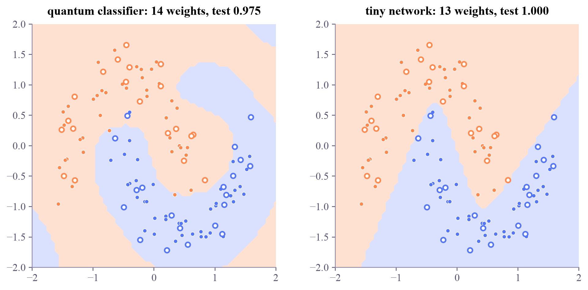

{'moons': [(80, 2), (40, 2)], 'circles': [(80, 2), (40, 2)], 'xor': [(80, 2), (40, 2)]}
Quantum Machine Learning
 about 15 min
about 15 min qml-w3d5.ipynb
qml-w3d5.ipynb
Project: a quantum classifier versus a tiny network
This week's best quantum classifier against a classical network of the same size: same data, same splits, same loss, one look at the test set, and an honest look at the bills.
In this lesson you will
- Run a fair duel between a variational quantum classifier and a small neural network
- Compare accuracy with its spread, and cost in circuit runs, shots and multiply-adds
- Read the decision boundaries for what each model's structure makes easy
Warm-up
1 minThe question every paper must answer

From Monday to Thursday you built a quantum classifier piece by piece: readout, loss, hybrid training, re-uploading. Now comes the question every QML paper has to answer: is it any better than a classical model of the same size? Week 2 asked it about kernels. Today you ask it about circuits that learn.
Big idea
3 minThe rules of the duel
- The contestants. Quantum: 2 qubits, 3 uploads, 12 circuit weights plus the scale and shift (14 numbers). Classical: a network with 2 inputs, 3 tanh units and 1 output (13 weights). Equal sizes keep the comparison about the models' structure, not their budgets.
- The same training. Cross-entropy and Adam for both, each run until its loss settles: 60 epochs for the circuit, 300 steps for the network.
- The same protocol as week 2. Moons, circles and XOR, three random splits each, 80 training and 40 test points, scaling fitted on the training part, and one look at the test set.
The bills. Each quantum epoch costs circuit runs per point, so one training takes runs: 120 million shots on hardware at 1,000 shots per run. The network needs about 27 multiply-adds per point and step, some 650,000 in all, which a laptop does in about a millisecond.
Same data, splits, loss and optimizer; compare accuracies together with their spread, and keep the bills in view: 120,000 circuit runs against a millisecond of arithmetic.
Play
3 minWatch the race
Both models train side by side on the same 80 points. The rings are the 40 test points, scored once when the race ends.
Try this
Race on each dataset, then press New split and race again. Does the same model win every time? Then compare the shapes: the network draws a few smooth bends, while the quantum classifier's boundary is built from waves, and it often keeps bending in the corners, far from any data.
Code
3 minThe duel in code
The notebook for this lessonEvery code cell below, with what it printed, is in
qml-w3d5.ipynb. To change the code and run it yourself, open the notebook in Google Colab (free, in your browser) or download it for your own Jupyter.import time
import numpy as np
import torch
from torch import nn
from qiskit import QuantumCircuit
from qiskit.circuit import ParameterVector
from qiskit.quantum_info import SparsePauliOp
from qiskit_aer.primitives import EstimatorV2 as AerEstimator
from sklearn.datasets import make_moons, make_circles
from sklearn.preprocessing import MinMaxScaler
from sklearn.model_selection import train_test_split
torch.set_num_threads(1)
estimator = AerEstimator(options={"backend_options": {"max_parallel_threads": 1}}) # exact ⟨Z⟩, faster than the reference one
def dataset(kind, seed):
"""120 points, 80 for training and 40 for the test, features scaled to [-π/2, π/2] using the training part only."""
if kind == "moons":
X, y = make_moons(120, noise=0.15, random_state=seed)
elif kind == "circles":
X, y = make_circles(120, noise=0.08, factor=0.5, random_state=seed)
else:
rng = np.random.default_rng(seed)
corner = rng.choice([-1, 1], size=(120, 2))
X, y = corner + 0.4 * rng.normal(size=(120, 2)), (corner[:, 0] * corner[:, 1] < 0).astype(int)
X_tr, X_te, y_tr, y_te = train_test_split(X, y, test_size=40, random_state=seed, stratify=y)
scaler = MinMaxScaler((-np.pi / 2, np.pi / 2)).fit(X_tr)
return scaler.transform(X_tr), scaler.transform(X_te), y_tr, y_te
print({kind: [a.shape for a in dataset(kind, 0)[:2]] for kind in ("moons", "circles", "xor")})What it printed in the notebook
x, w = ParameterVector("x", 2), ParameterVector("w", 12)
circuit = QuantumCircuit(2)
for l in range(3):
circuit.ry(x[0], 0)
circuit.ry(x[1], 1)
circuit.ry(w[4 * l], 0)
circuit.rz(w[4 * l + 1], 0)
circuit.ry(w[4 * l + 2], 1)
circuit.rz(w[4 * l + 3], 1)
circuit.cx(0, 1)
Z1 = SparsePauliOp("ZI")
def scores(X, weight_sets):
rows = np.array([np.concatenate([W, p]) for W in weight_sets for p in X])
return estimator.run([(circuit, Z1, rows)]).result()[0].data.evs.reshape(len(weight_sets), len(X))
sigmoid = lambda z: 1 / (1 + np.exp(-z))
def train_quantum(X, y, epochs=60, lr=0.1, seed=0):
theta = np.r_[0.6 * np.random.default_rng(seed).normal(size=12), 2.0, 0.0] # 12 circuit weights, then a and b
m, v, runs = np.zeros(14), np.zeros(14), 0
shifts = [s * np.eye(12)[j] for j in range(12) for s in (np.pi / 2, -np.pi / 2)]
for k in range(1, epochs + 1):
W, a, b = theta[:12], theta[12], theta[13]
S = scores(X, [W] + [W + d for d in shifts])
runs += S.size
f, df = S[0], (S[1::2] - S[2::2]) / 2
dz = (sigmoid(-a * f + b) - y) / len(y) # cross-entropy through the sigmoid
g = np.r_[df @ (-a * dz), np.sum(-f * dz), np.sum(dz)]
m, v = 0.9 * m + 0.1 * g, 0.999 * v + 0.001 * g ** 2
theta = theta - lr * (m / (1 - 0.9 ** k)) / (np.sqrt(v / (1 - 0.999 ** k)) + 1e-8)
predict = lambda X_: (sigmoid(-theta[12] * scores(X_, [theta[:12]])[0] + theta[13]) > 0.5).astype(int)
return predict, runsdef train_network(X, y, hidden=3, steps=300, lr=0.05, seed=0):
torch.manual_seed(seed)
net = nn.Sequential(nn.Linear(2, hidden), nn.Tanh(), nn.Linear(hidden, 1))
optimizer = torch.optim.Adam(net.parameters(), lr=lr)
Xt, yt = torch.tensor(X, dtype=torch.float32), torch.tensor(y, dtype=torch.float32)
for step in range(steps):
optimizer.zero_grad()
nn.functional.binary_cross_entropy_with_logits(net(Xt).squeeze(1), yt).backward()
optimizer.step()
def predict(X_):
with torch.no_grad():
return (net(torch.tensor(X_, dtype=torch.float32)).squeeze(1) > 0).int().numpy()
return predict, sum(p.numel() for p in net.parameters())
print("network weights:", train_network(*dataset("moons", 0)[::2], steps=1)[1])What it printed in the notebook
network weights: 13
table = {}
for kind in ("moons", "circles", "xor"):
q_acc, c_acc, q_time, c_time = [], [], 0.0, 0.0
for seed in range(3):
X_tr, X_te, y_tr, y_te = dataset(kind, seed)
t0 = time.time()
predict_q, runs = train_quantum(X_tr, y_tr, seed=seed)
q_time += time.time() - t0
t0 = time.time()
predict_c, _ = train_network(X_tr, y_tr, seed=seed)
c_time += time.time() - t0
q_acc.append(np.mean(predict_q(X_te) == y_te))
c_acc.append(np.mean(predict_c(X_te) == y_te))
table[kind] = (q_acc, c_acc)
print(f"{kind:8s} quantum {np.mean(q_acc):.3f} ± {np.std(q_acc):.3f} ({q_time / 3:4.1f} s per run) "
f"network {np.mean(c_acc):.3f} ± {np.std(c_acc):.3f} ({c_time / 3:.2f} s per run)")
print(f"circuit runs per quantum training: {runs:,}")What it printed in the notebook
moons quantum 0.958 ± 0.012 (14.4 s per run) network 0.975 ± 0.020 (0.09 s per run) circles quantum 0.942 ± 0.042 (15.0 s per run) network 0.942 ± 0.024 (0.10 s per run) xor quantum 0.958 ± 0.024 (15.1 s per run) network 0.942 ± 0.031 (0.09 s per run) circuit runs per quantum training: 120,000
Cell 2 uses Qiskit Aer's estimator: the same exact values, about four times faster. In the table, the network leads on the moons, they tie on the circles, and the quantum classifier leads on XOR, and every gap is smaller than the spread. The clear difference is in the time column: about 15 seconds per quantum training on a simulator, a tenth of a second for the network.
Project
3 minProject: boundaries, bills and three sentences
- Read the table: where does each contestant win, and is any gap bigger than the spread?
- Draw both decision boundaries for one split of the moons, side by side.
- Count the bill: how many circuit runs did one quantum training take, and how many shots would that be at 1,000 per run?
- Write three honest sentences.
import matplotlib.pyplot as plt
X_tr, X_te, y_tr, y_te = dataset("moons", 0)
# TODO: train both contestants on this split, draw their boundaries on a grid (two panels),
# and print the quantum bill: circuit runs, and shots at 1,000 per runNeed a hint?
train_quantum and train_network return a predict function. Call it on the points of a grid, np.c_[gx.ravel(), gy.ravel()], and draw the result with contourf.
Show a solution
import matplotlib.pyplot as plt
from matplotlib.colors import ListedColormap
X_tr, X_te, y_tr, y_te = dataset("moons", 0)
predict_q, runs = train_quantum(X_tr, y_tr)
predict_c, n_weights = train_network(X_tr, y_tr)
g = np.linspace(-2.0, 2.0, 61)
gx, gy = np.meshgrid(g, g)
grid = np.c_[gx.ravel(), gy.ravel()]
fig, axes = plt.subplots(1, 2, figsize=(9, 4.2), layout="constrained")
for ax, (name, predict) in zip(axes, [("quantum classifier: 14 weights", predict_q), (f"tiny network: {n_weights} weights", predict_c)]):
ax.contourf(gx, gy, predict(grid).reshape(gx.shape), levels=[-0.5, 0.5, 1.5], cmap=ListedColormap(["#ffe1d2", "#d9e1ff"]))
ax.scatter(X_tr[:, 0], X_tr[:, 1], c=np.where(y_tr == 0, "#ff8a50", "#5577f5"), s=18, edgecolors="white", linewidths=0.5)
ax.scatter(X_te[:, 0], X_te[:, 1], facecolors="white", edgecolors=np.where(y_te == 0, "#ff8a50", "#5577f5"), s=26, linewidths=1.6)
ax.set_title(f"{name}, test {np.mean(predict(X_te) == y_te):.3f}")
ax.set_aspect("equal")
plt.show()
print(f"quantum bill: {runs:,} circuit runs = {runs * 1000:,} shots at 1,000 shots per run")
print(f"network bill: about {3 * 9 * 80 * 300:,} multiply-adds (forward and backward, 300 steps)")
print()
print("1. On these three small datasets the quantum classifier and a 13-weight network tie within the spread.")
print("2. The network trains in a fraction of a second on a laptop; the quantum model needs 120,000 circuit runs,")
print(" about 120 million shots on hardware, before counting noise.")
print("3. A tie on toy data says nothing about harder data either way; it does say that 'it works' is not evidence of an advantage.")What it printed in the notebook

quantum bill: 120,000 circuit runs = 120,000,000 shots at 1,000 shots per run network bill: about 648,000 multiply-adds (forward and backward, 300 steps) 1. On these three small datasets the quantum classifier and a 13-weight network tie within the spread. 2. The network trains in a fraction of a second on a laptop; the quantum model needs 120,000 circuit runs, about 120 million shots on hardware, before counting noise. 3. A tie on toy data says nothing about harder data either way; it does say that 'it works' is not evidence of an advantage.
Reading the boundaries. The network's boundary is a smooth V: a few tanh bends. The quantum classifier's boundary is a sum of waves, Thursday's Fourier series, and it keeps curling in the corners, where there is no data to hold it still. Neither shape is wrong on these points, but they generalize differently, and that matters more than a single accuracy number.
Check yourself
1 minQuick check
Question 1 of 3
On XOR, the quantum classifier scores 0.958 ± 0.024 and the network 0.942 ± 0.031. What do you report?
Question 2 of 3
One quantum training takes 120,000 circuit runs. How many shots is that at 1,000 shots per run?
Question 3 of 3
Why give the network about as many weights as the quantum classifier?
Wrap-up
1 minThis week in one sentence
Research link
Bowles, Ahmed and Schuld (2024) reached the same verdict at scale: out-of-the-box classical models, small networks included, matched or beat the quantum classifiers they tested. Next week asks what quantum models would need to be worth their bill: surviving noise, staying trainable, and data with quantum structure.
Go deeper (optional)
Bowles, Ahmed and Schuld, "Better than classical? The subtle art of benchmarking quantum machine learning models" (2024), the parts on variational classifiers. On why simulators can train circuits by backpropagation while hardware needs parameter shifts: the PennyLane demo "Quantum gradients with backpropagation".
That's week 3 of Quantum ML! Saturday: optional flashback. Next week: QML for research, from noise and trainability to quantum data and your own mini-study.

That's the lesson!
Tap the button to save it. Short and steady wins.
Marked by mistake? Undo